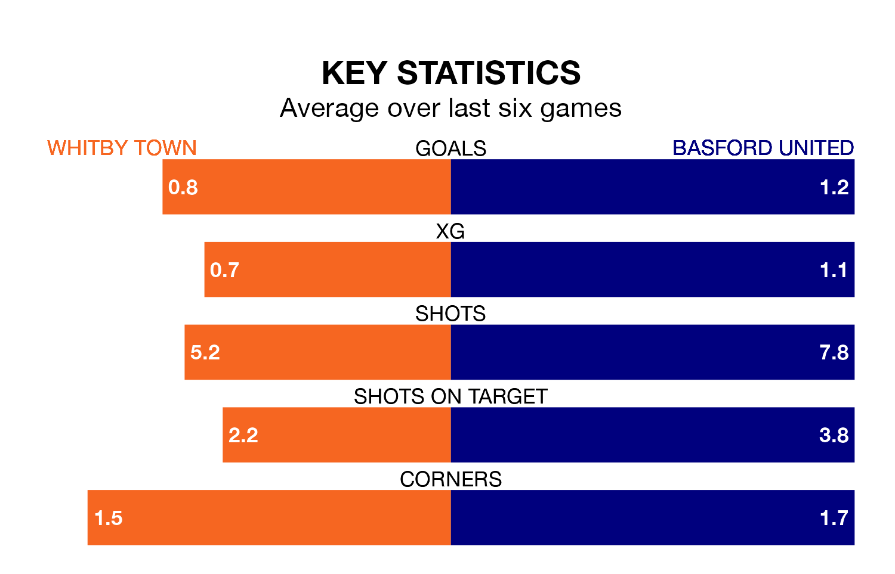

Whitby Town are heavy favourites to keep all three points at home in Saturday's kick-off against Basford United.
Whitby, who sit ninth in Northern Premier League with 25 games played, are priced at 1.6 to seal victory at the Turnbull Ground.
Sitting nine places and 19 points behind them in the table, Basford are 4.9 to win with *Betting Company*, while the draw is at 3.9.
In the last 10 years, Whitby and Basford have played each other on six occasions. They won one each, and they drew four times.
On average, Whitby scored 1.5 goals and Basford 1.3 in those matches.
Their last meeting was on December 2, when they played out a 1-1 draw.
With 30 goals in 29 games so far this season, Basford are scoring at below the league average rate with 1.0 goals per game. And they are conceding at an average rate, letting in 48 goals at a rate of 1.7 per game.
Whitby are also below average scorers, with 1.6 goals per game, compared to a league average of 1.7. They have conceded 1.2 goals per game.
Town are in mixed form in Northern Premier League, with two wins and two draws from their last six games.
With two wins and a draw over that period, United's form is slightly worse – they have taken seven points from 18, compared to the home team's eight.
Whitby's last match was on January 27, a 0-0 draw against Workington.
Basford drew 2-2 with Rylands last time out, also on January 27.
Updated: 15:45 (UTC), 02/02/24